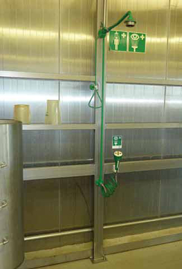

Beim Umgang mit Säuren und Laugen, Abbeizern, lösemittelhaltigen Produkten, Kraftstoff oder Zement sind Augenduschen am Arbeitsplatz bereit zu halten.
Gelangt ein Gefahrstoff ins Auge, so ist als Erste-Hilfe-Maßnahme das Auge 10 Minuten lang mit Hilfe der Augendusche zu spülen.
Anschließend sofort Augenarzt aufsuchen.